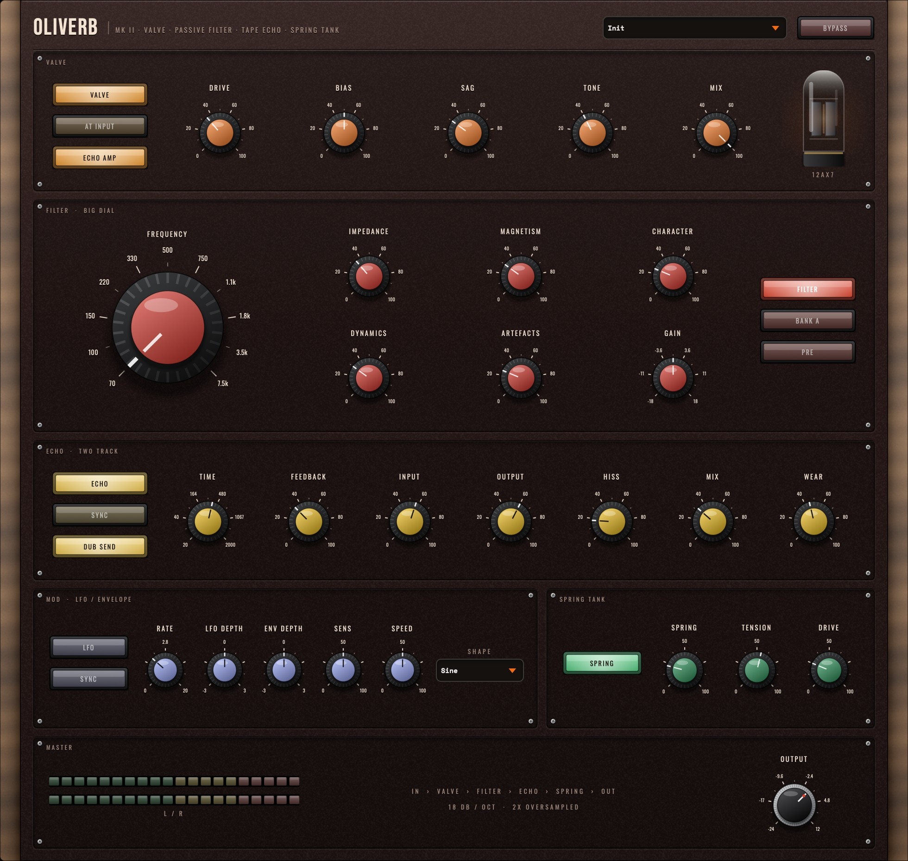
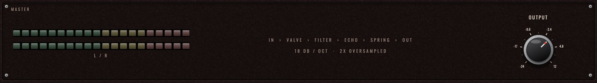
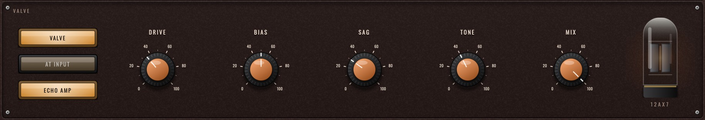
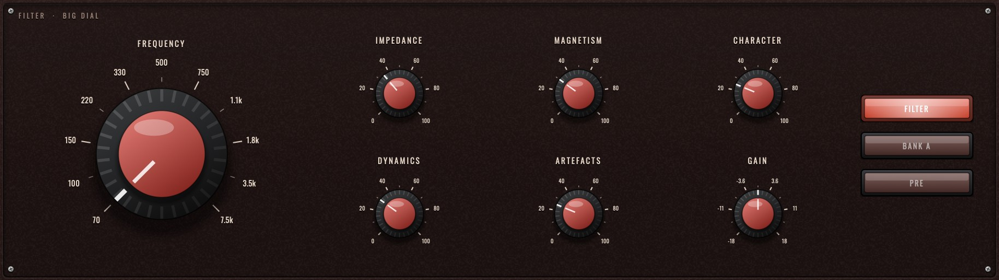
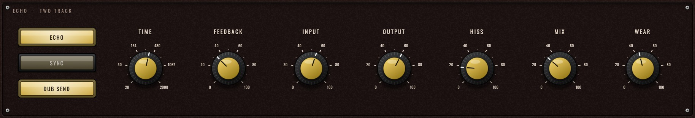
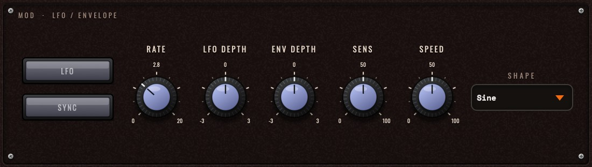
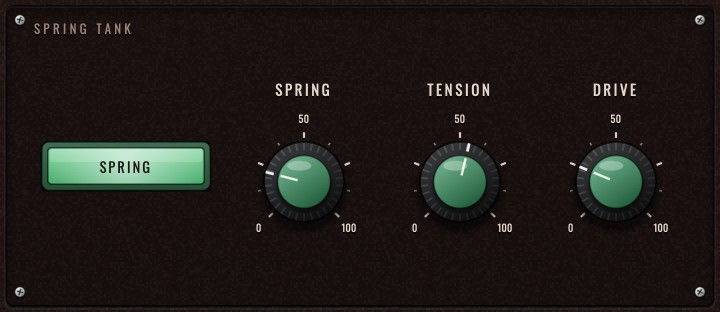

Deestech · Service & Operation
A valve preamp, a passive high-pass filter, a two-track tape echo, and a spring tank — the boxes that made dub, in one plug-in.
OLIVERB is one oxblood faceplate between walnut cheeks, with six engraved modules stacked top to bottom in the order the signal flows (in the default routing). Each module is keyed by the colour of its knob caps and lamp buttons: amber for the Valve, red for the Filter, gold for the Echo, lilac for Mod, green for the Spring, and a black Bakelite Output knob in Master. Every module has its on/off lamp at the left (the Filter's sits at the right, beside the dial).

A B C D E F G| Module | What lives there | |
|---|---|---|
| A | Header | The OLIVERB nameplate and MK II legend, the preset menu and the Bypass lamp. When a newer version is out, an UPDATE pill appears here, just left of the preset menu (see below). |
| B | Valve | Lamps Valve (on/off), At Input / At Output (where the valve sits in the chain) and Echo Amp (the same valve inside the tape machine); knobs Drive, Bias, Sag, Tone and Mix; and the 12AX7 valve at the right, which glows with how hard the stage is working. |
| C | Filter · Big Dial | The big red Frequency dial, its scale engraved with the chosen bank's eleven corner frequencies; Impedance, Magnetism and Character above Dynamics, Artefacts and Gain; lamps Filter, Bank A / Bank B and Pre / Post at the right. |
| D | Echo · Two Track | Lamps Echo, Sync (tempo lock) and Dub Send / Held; knobs Time, Feedback, Input, Output, Hiss, Mix and Wear. With Sync lit, Time is replaced by a note-division menu. |
| E | Mod · LFO / Envelope | Lamps LFO and Sync; knobs Rate, LFO Depth, Env Depth, Sens and Speed; the Shape menu. With Sync lit, Rate becomes a division menu. Both sources drive the big dial. |
| F | Spring Tank | The Spring lamp; knobs Spring (amount), Tension (decay) and Drive. |
| G | Master | L/R peak meters, the live signal-chain readout (it re-orders itself as you move the valve and filter), the filter spec line, and the Output knob (−24 to +12 dB). |
Drag the bottom-right corner (a small dotted grip appears when the mouse is over it) to scale the whole faceplate from 60 % to 150 % of its 980 × 930 base size. Everything is drawn as vectors, so it stays sharp at any size and on Retina / HiDPI screens. Your host's own plug-in zoom works too.
While its window is open, OLIVERB checks deestechholdings.com/updates.json at most once a day. When a newer version exists, an amber UPDATE x.y.z pill appears in the header; click it for the release notes, Download and Skip this version. Nothing is sent but a plain request for the version list, and nothing runs on the audio thread.
Download OLIVERB-macOS.zip from the releases page,
unzip it, and run OLIVERB-macOS.pkg. It installs the VST3 and AU for all users into
/Library/Audio/Plug-Ins/VST3 and /Library/Audio/Plug-Ins/Components.
The installer is unsigned, so the first launch may be blocked: right-click the .pkg →
Open → Open anyway. If the plug-in itself is quarantined:
xattr -dr com.apple.quarantine /Library/Audio/Plug-Ins/VST3/OLIVERB.vst3
Prefer a manual install? The zip also contains the raw OLIVERB.vst3 and OLIVERB.component
— drop them into ~/Library/Audio/Plug-Ins/VST3/ and ~/Library/Audio/Plug-Ins/Components/.
Download OLIVERB-Windows.zip, unzip, and run OLIVERB-Windows-Setup.exe. It installs to
C:\Program Files\Common Files\VST3\OLIVERB.vst3. SmartScreen will warn about an unrecognised app:
click More info → Run anyway. For a manual install, copy the OLIVERB.vst3 folder into
C:\Program Files\Common Files\VST3\.
Download OLIVERB-Linux.zip and copy OLIVERB.vst3 to ~/.vst3/.
After installing, rescan plug-ins in your DAW. OLIVERB appears under Deestech in the Fx / Filter / Delay / Reverb categories. Upgrading from v1 or v2.0: install over the top. 2.1.0 changes only the faceplate — the sound and every parameter are the same, so sessions reload exactly as saved (sessions from v1 load with the valve at its default settings).
The Valve colours everything after it at the front, or becomes a master valve stage across the whole mix, echo tails and spring included, at the back. The filter's Pre / Post lamp is the other big routing decision:

You never have to remember the routing: the chain readout in the Master module spells out the current order — for example In › Valve › Filter › Echo › Spring › Out — and re-orders itself as you flip At Output or Post. A switched-off valve drops out of it.
Everything runs at 2× oversampling internally; the extra latency is reported to your host automatically, so tracks stay aligned.

A single-ended triode line amplifier with an output transformer. Its transfer curve is asymmetric — grid conduction flattens the positive swing quickly, cut-off softens the negative swing slowly — which is why it makes even harmonics (warmth) rather than the odd-only fuzz of a symmetric clipper. The drawn 12AX7 at the right of the module glows with how hard the valve is actually working.
| Control | Range (default) | What it does |
|---|---|---|
| Valve | (On) | Switches the valve stage in or out. |
| Drive | 0–100 % (35 %) | Gain into the grid, up to +36 dB. Level is compensated on the way out, so Drive changes the shape of the sound far more than its loudness. Zero is a clean line amp (about 1 % second harmonic); full is a valve on its knees. |
| Bias | 0–100 % (50 %) | The operating point. Cold is near-symmetric and stays clean until pushed; hot is asymmetric from the first volt and thick at any level — the even-harmonic knob. |
| Sag | 0–100 % (30 %) | The supply giving way under load: gain drops and bias goes colder as the signal rises. Compression, bloom, a stage that pushes back. |
| Tone | 0–100 % (40 %) | The output transformer: iron bump below 100 Hz, loss at the very top (19 kHz down to 6.5 kHz), and the core rounding off what's still too big for it. |
| Mix | 0–100 % (100 %) | Parallel blend against the dry signal. |
| At Input / At Output | (At Input) | At Input (dark) puts the valve first in the chain; At Output (lit) puts it last, after the spring. |
| Echo Amp | (On) | Hands the same valve curve to the tape machine's record amplifier, scaled by Drive. Off restores the original solid-state record amp. |

A passive, inductor-based high-pass, third order (18 dB/octave). No active parts — its character comes from termination and core saturation, not resonance. The dial's engraved scale always shows the corner frequencies of the bank you have selected, so it re-labels itself when you switch Bank A / Bank B.
| Control | Range (default) | What it does |
|---|---|---|
| Filter | (On) | Switches the filter in or out. |
| Frequency | 1–11 (1) | The big dial: eleven switch positions — see the table below. |
| Bank A / Bank B | A / B (A) | Capacitor bank. A is the classic broad sweep; B sits lower and tighter. |
| Impedance | 0–100 % (35 %) | Termination. At 0 % the network is properly terminated and flat; open it up and the corner lifts by several dB. This peak is the sound of the hardware. |
| Magnetism | 0–100 % (30 %) | How hard the inductor cores saturate. Signal level pushes the corner upward and generates harmonics. |
| Character | 0–100 % (25 %) | Non-linearity in the damping path — harmonic content, independent of the core. |
| Dynamics | 0–100 % (30 %) | How fast the core tracks the signal. Slow = a gentle breathing lift; fast = it behaves like an envelope filter. |
| Artefacts | 0–100 % (25 %) | Switch thump. At 0 % the corner glides between positions (the hardware can't). At 100 % it clacks like the real rotary. |
| Gain | ±18 dB (0) | Internal trim after the filter. |
| Pre / Post | (Pre) | Filter before the echo, or across the finished signal — see §4. |
| Step | 1 | 2 | 3 | 4 | 5 | 6 | 7 | 8 | 9 | 10 | 11 |
|---|---|---|---|---|---|---|---|---|---|---|---|
| Bank A | 70 | 100 | 150 | 220 | 330 | 500 | 750 | 1.1k | 1.8k | 3.5k | 7.5k |
| Bank B | 50 | 80 | 120 | 170 | 240 | 350 | 520 | 800 | 1.3k | 2.4k | 5.0k |
All values in Hz — exactly as engraved around the dial.

A studio tape recorder used as an echo: record head → tape → replay head, output patched back to the input. Each pass through the loop loses a little top end and gains a little saturation, so long tails get darker and thicker rather than louder. With the valve's Echo Amp lit, that saturation is the triode curve.
| Control | Range (default) | What it does |
|---|---|---|
| Echo | (On) | Switches the echo in or out. |
| Time | 20–2000 ms (375) | Tape delay. Changing it drags the transport, so pitch bends on the way — as tape does. |
| Sync | (Free) | Lock the delay to the host tempo. When lit, the Time knob is replaced by a note-division menu, 1/16 to 1/1 with triplet (T) and dotted (.) values (default 1/4). |
| Feedback | 0–100 % (34 %) | Loop regeneration. Unity sits at 80 % — above that the machine self-oscillates on purpose, limiting into the record amp instead of exploding. |
| Dub Send / Held | (Dub Send) | Dub Send (lit) feeds the input into the machine. Held (dark) closes the door: the input stops, but whatever is on the loop keeps circulating. |
| Input | 0–100 % (57 %) | Level into the record amp. Push it to saturate the tape harder. |
| Output | 0–100 % (60 %) | Level out of the machine. |
| Hiss | 0–100 % (18 %) | Tape noise, recorded to the tape — it recirculates and builds with feedback instead of sitting on top. |
| Mix | 0–100 % (32 %) | Dry/wet balance for the echo. |
| Wear | 0–100 % (45 %) | Machine condition: one knob scaling flutter, HF loss, head bump and record-amp drive from freshly aligned to tired. |

Both modulation sources push the Frequency dial, in octaves relative to the switch position, so everything the filter does — corner peak, core saturation, character — rides along with the sweep. Modulation is shared by both channels, so the stereo image holds.
| Control | Range (default) | What it does |
|---|---|---|
| LFO | (Off) | Enables the LFO. |
| Shape | 5 shapes (Sine) | Sine, Triangle, Saw Down, Square, S+H — the menu at the right of the module. Square and S+H are lightly smoothed: the corner snaps, the zipper doesn't. |
| Rate | 0.02–20 Hz (0.8) | Free-running speed. |
| Sync | (Free) | Lock the rate to the host tempo. When lit, the Rate knob becomes a division menu, 1/16 to 1/1 (default 1/2); synced sweeps re-align to the bar. |
| LFO Depth | ±3 oct (0) | How far the dial travels. Negative inverts the sweep. |
Follows the input signal (pre-filter), so it responds to what you play, not to what the filter is already doing. It is always available — Env Depth at 0 is off.
| Control | Range (default) | What it does |
|---|---|---|
| Env Depth | ±3 oct (0) | Bipolar: positive opens the filter on hits (auto-wah); negative ducks it out of the way. |
| Sens | 0–100 % (50 %) | How hard the follower listens. |
| Speed | 0–100 % (50 %) | How fast it moves. |

A two-tank spring reverb. Springs are dispersive — highs travel through the coil faster than lows — so a transient smears into the characteristic descending boing that room reverbs never produce.
| Control | Range (default) | What it does |
|---|---|---|
| Spring (lamp) | (On) | Switches the tank in or out. |
| Spring | 0–100 % (22 %) | How much of the tank is in the output. |
| Tension | 0–100 % (55 %) | Decay time of the tank. |
| Drive | 0–100 % (25 %) | Level into the send transducer. This is where the crash lives — hit it hard and transients splash. |
| Control | Range (default) | What it does |
|---|---|---|
| Output | −24 to +12 dB (0) | Final level trim — the black knob at the right of the Master module. |
| Bypass | (Off) | True bypass of the whole plug-in. The lamp in the header lights red when bypassed. |
| Presets | 14 factory | The menu in the header. Loading a preset starts from the defaults and applies its own settings (§11). |
| Meters | L / R peak | Twenty-segment peak ladders covering the top 48 dB of the final output, after the Output trim. |
| Chain readout | — | The live signal order (§4), with the filter's slope and oversampling beneath it. |
Each of the four processing modules also has its own on switch, so OLIVERB can serve as just a valve, just a filter, just an echo, or just a spring.
| Preset | What it shows |
|---|---|
| Init | Everything at defaults — the valve on at a gentle 35 %. |
| Waterhouse Rockers | The classic chain at working settings, valve warm — the place to start. |
| Valve Warmth | Valve only, everything else off: a tube line amp on a bus or a mix. |
| Hot Preamp | Valve only, driven hard with heavy sag: a mic pre on its knees. |
| Snare Throw | High feedback, hot input: hit it with one snare and ride the tail. |
| Big Dial Sweep | Open termination, heavy magnetism, audible switch clacks — for performing the dial. |
| Tape Wash | Long, worn, hissy repeats that melt into the spring, valve tone thick. |
| Glowing Tape | The valve at output, driven, with a hot tape loop — everything cooks together. |
| Held Echo (Dub Out) | Send is Held and feedback at unity: an infinite loop, filter across the output. Light Dub Send to let new signal in. |
| Spring Crash | The tank up front, driven hard. |
| Roots Bass Tighten | Filter and valve only, step 1, a little core saturation — a bass-tightening tool, no wet signal at all. |
| Auto Wah Skank | Envelope follower opening the dial on hits. Guitars and clavs. |
| Tidal Sweep | Tempo-synced triangle LFO sweeping two octaves over a whole bar. |
| Siren | Everything at maximum, valve included. You were warned. |
Valve as a bus tool. Load Valve Warmth. Drive 30–50 %, Bias 60 %, Sag 20 %: glue and weight without obvious distortion. The 12AX7 should flicker, not burn.
Pushed preamp. Drive past 70 % with Sag up: the stage compresses into itself and blooms after transients. Bias hot for thickness, cold for a cleaner crunch.
Valve at the back. Light At Output so the valve sits after the spring: echo tails and splashes get rounded off by the same tube, and hot feedback stops sounding digital.
The dub throw. Feedback high, Mix high, Dub Send lit. Un-mute one hit — a snare, a vocal word — then tap the lamp to Held. The hit circulates and decays on its own while the dry signal carries on. Tap back to Dub Send for the next throw.
Ride the dial. With the filter on Pre, sweep Frequency during the echo tail: every repeat re-inherits the new corner and the whole tail bends. Add Artefacts for the hardware clack on each step.
Pitch-bend echoes. Automate Time. The transport drags, so repeats bend like varispeed tape. Small moves = subtle warble; big jumps = dive-bombs.
Self-oscillation instrument. Feedback past 80 %, no input: the machine sings on its own. Tune it with Time, filter it with the dial, crash it into the spring.
Auto-wah. Env Depth positive, filter step 4–6, Impedance up. Sens sets how hard it listens, Speed how fast the corner chases the playing.
Reverse duck. Env Depth negative: the filter closes on hits and blooms back open in the gaps — an ungate for pads and textures.
| Symptom | Fix |
|---|---|
| Plug-in doesn't appear in the DAW | Rescan plug-ins. Confirm the .vst3 is in the system VST3 folder (§2). On Apple-silicon Macs check the DAW isn't running in Rosetta with an arm64-only scan cache. |
| macOS blocks the installer or plug-in | Right-click → Open on the .pkg, or clear quarantine with the xattr command in §2. |
| Windows SmartScreen warning | More info → Run anyway. The installer is unsigned, not unsafe. |
| Window too big or too small | Drag the bottom-right corner: the faceplate scales from 60 % to 150 %. |
| An UPDATE pill appeared | A newer OLIVERB is out. Click it for the notes and download, or Skip this version to hide it until the next release. |
| Sound is late or flamming | OLIVERB reports its 2× oversampling latency to the host; enable your DAW's plug-in delay compensation. |
| Everything sounds slightly thicker than v1 | That's the valve at its default 35 %. Switch the Valve lamp off, or Drive to 0, for the v1 sound. |
| Echo tail never dies | Feedback is at or above 80 % (unity). That's a feature — pull it down, or light Dub Send with no input. |
| Output slammed after big dial moves | Open Impedance plus hot echo feedback genuinely adds level. Use the filter Gain or the Master Output knob. The output stage is hard-limited, so it cannot run away. |
King Tubby's name and the names of any commercial products are used only to describe the hardware being modelled; no affiliation or endorsement is claimed or implied.